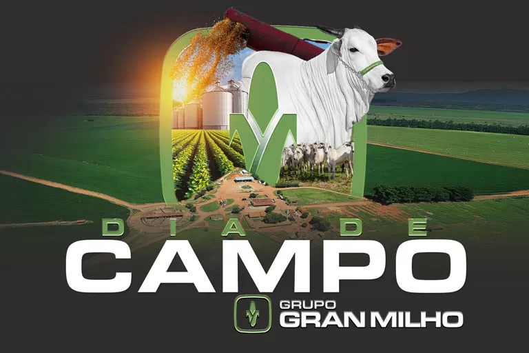

Foi criado em 1960 pelo então presidente Juscelino Kubitschek para celebrar o centenário da fundação do Ministério da Agricultura, que aconteceu em 1966.
Um dia de campo para granjeiros, no contexto de Itambé - PR, geralmente refere-se a um evento de campo, ou seja, um encontro em um local rural, onde são apresentadas tecnologias e práticas específicas para a produção de granjeiro.È um evento de educação e extensão rural que ocorre em uma propriedade rural, geralmente uma granja, e que visa levar informações e conhecimentos práticos sobre produção animal, principalmente avicultura (galinhas) e outras culturas rurais, aos produtores e interessados.Manejo de aves: Desde o nascimento até a produção de ovos.Manejo de aves: Desde o nascimento até a produção de ovos. Alimentação e nutrição: O que os animais precisam comer para ter uma boa saúde e produção. Saúde animal: Como prevenir e tratar doenças em aves. Gestão da granja: Como organizar a produção, manter a higiene e garantir a segurança dos animais e dos trabalhadores. Produção de ovos: Técnicas para melhorar a qualidade e quantidade dos ovos. Tecnologias inovadoras: Novos equipamentos e métodos que podem ser utilizados na granja.
Geralmente, os Dias de Campo são realizados em fazendas ou granjas modelo, onde os participantes podem observar a aplicação prática dos temas abordados. Muitas vezes, incluem palestras, oficinas, apresentações de produtos e debates com especialistas. Benefícios: Além de fornecer informações técnicas, os Dias de Campo são um importante espaço para a troca de experiências entre produtores, fomentando a cooperação e a inovação no setor. Importância para o Setor: A produção de aves, por exemplo, é uma atividade econômica relevante, com grande impacto na geração de empregos e na produção de alimentos. Os Dias de Campo contribuem para a modernização e o desenvolvimento sustentável do setor, promovendo a eficiência e a qualidade dos produtos.
O Dia de Campo tem como principal objetivo levar a produtores, técnicos, alunos e demais interessados informações técnicas sobre as culturas de arroz, soja, milho, sorgo e pastagens, produção de silagem e outros assuntos pertinentes à produção agropecuária.